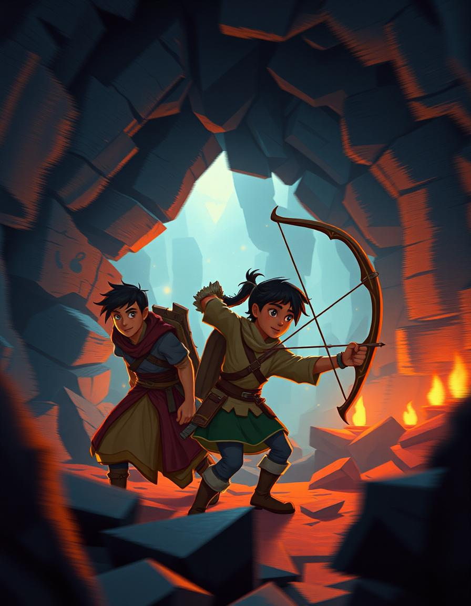

Seja bem-vindo a GameDev Company!
Fazemos jogos e criamos uma nova experiência, envolvendo a realidade virtual. Nós somos a GameDev.
Nossos Jogos
-
Game 1: Escravos do clt
Apenas um jogo teste aonde acontece um toor pela nossa empresa.
-

Game 2: João no pesadelo
Um clássico jogo de terror e aventura, onde João enfrenta seus medos.
-

Game 3: Mestre nos enigmas
Um jogo desafiador com níveis cada vez mais difíceis e uma atmosfera relaxante.
-
Game 4: Perdido no mundo dos sonhos
Um jogo de aventura, aonde o protagonista fica perdido no mundo dos sonhos.